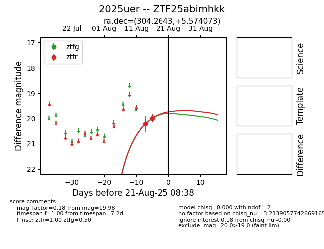

Target 2025uer at 2025-08-21 08:38, see:
FINK: fink-portal.org/ZTF25abimhkk
Lasair: lasair-ztf.lsst.ac.uk/objects/ZTF25abimhkk
ALeRCE: alerce.online/object/ZTF25abimhkk
TNS: wis-tns.org/object/2025uer
YSE: ziggy.ucolick.org/yse/transient_detail/2025uer
alt names
ZTF25abimhkk (ztf,alerce)
2025uer (tns,yse)
coordinates:
equatorial (ra, dec) = (304.2643,+5.57407)
galactic (l, b) = (48.1501,-16.19930)
photometry
last ztfg=20.21, ztfr=19.98
1 ztfg, 2 ztfr detections
